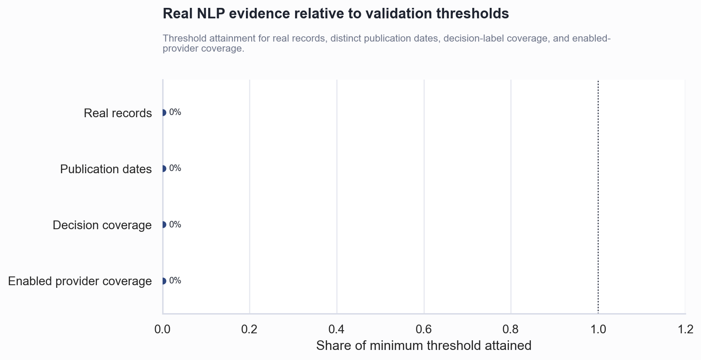

Phase 4A.6 Real NLP Signal Validation
Technical Summary
NLP signal is monitoring-only due to insufficient real-data coverage.
Real-data thresholds are not yet met
The harness found 0 real provider records. Fixture and placeholder rows were retained for diagnostics but excluded from empirical coverage, source-quality distributions, composite validation, and regime-agreement claims.
The chart shows each evidence dimension relative to its configured minimum. Values below the reference line are not decision-eligible.

Scope, Data, and Metric Definitions
Real evidence excludes rows marked by explicit fixture metadata, placeholder domains, or synthetic-test notes. Coverage uses real records only. Decision-label coverage is the share of market sessions with a coverage-gated composite label; source quality evaluates provenance and timestamp fields without market outcomes.
| metric | actual | threshold | passes |
|---|---|---|---|
| record_count | 0.0 | 50.00 | False |
| distinct_publication_dates | 0.0 | 20.00 | False |
| decision_label_coverage | 0.0 | 0.20 | False |
| provider_coverage | 0.0 | 1.00 | False |
| reaction_warning_rate | 0.0 | 0.25 | True |
Ex-Ante Scoring and Validation Method
Records are timestamp-validated, reaction-oriented language is flagged, publication availability is lagged, and scoring uses the configured local method. The composite combines RBI, earnings, and news risk components only after filtering invalid or reaction-warning rows. Quantitative comparison uses lagged rule-based regimes and HMM walk-forward only; full-sample HMM is never used.
Required validation questions
| question | answer |
|---|---|
| 1. Which real providers were enabled? | earnings |
| 2. Which providers returned real data? | None |
| 3. How many records were collected? | 2 input record(s); 0 classified as real provider data |
| 4. What is the date range? | Unavailable |
| 5. What is the source-quality distribution? | {"high": 0, "low": 0, "medium": 0, "unknown": 0} |
| 6. What share of records passed ex-ante validation? | 0.0% |
| 7. What share were flagged as possible reaction data? | 0.0% |
| 8. Was FinBERT used or did scoring fall back? | Lexicon configured; FinBERT not used |
| 9. What is the coverage ratio? | 0.0% |
| 10. What is the composite NLP risk label distribution? | {"insufficient_nlp_data": 1688} |
| 11. What is agreement with HMM regimes? | N/A |
| 12. What is agreement with rule-based regimes? | N/A |
| 13. Did NLP produce pre-stress warnings? | 0 warning(s); not interpreted when coverage is insufficient |
| 14. Is evidence sufficient for future allocation testing? | C. Insufficient real-data coverage |
Insufficient records prevent empirical claims
The bundled transcripts and news fixtures validate software behavior, not real signal efficacy. The quantitative comparison history is deterministic and synthetic, used only to exercise safe lagged interfaces. No return, volatility, drawdown, or post-event market reaction is used as an NLP feature. Agreement and pre-stress statistics are withheld when real coverage is insufficient.
Collect governed real text before allocation research
- Populate reviewed RBI and earnings manifests with genuine publication timestamps and source URLs.
- Enable one cached API provider at a time under documented rate, licensing, and retention rules.
- Re-run shadow monitoring until volume, freshness, source quality, and reaction-warning thresholds are stable.
- Keep NLP commentary-only until a separate future allocation-testing phase is explicitly approved.
Further Questions
Which provider mix can sustain the minimum daily coverage? How should source-quality thresholds vary by provider type? What out-of-sample period is long enough to evaluate false risk-off warnings without optimizing on future returns?